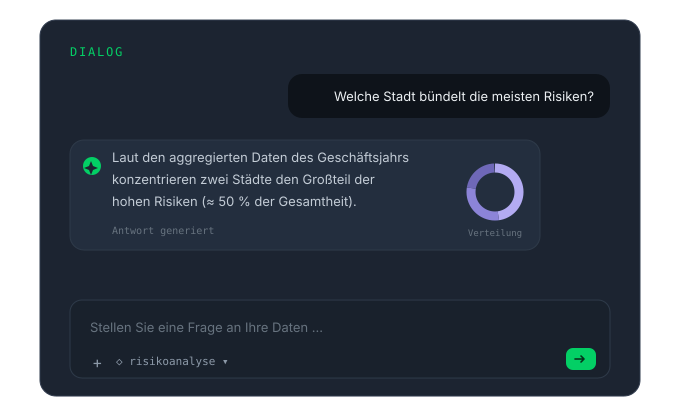
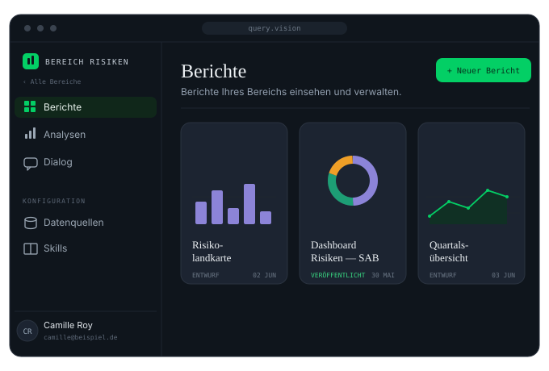

Spot Vision bringt Ihre Referenzdokumentation zum Sprechen: Ihre Teams navigieren in natürlicher Sprache durch die Korpora, die Sie ihm anvertrauen — interne Verfahren, Vertragshistorien, Finanzarchive, Strategieplan — und erhalten inhaltstreue Antworten, in ihrem Berechtigungsbereich.
Was der Agent kann
Hunderte Seiten an Verfahren, Verträgen oder Archiven werden zu einer Konversation: Jeder stellt seine Frage und erhält die exakte, dem Referenztext treue Antwort — Schluss mit Stichwortsuchen und kursierenden Versionen.

Die Dokumentenkorpora sind Workspaces zugeordnet, und die Zugriffsrechte folgen Ihrer Organisation. Spot Vision antwortet inhaltlich, auf Basis des anvertrauten Umfangs — er verspricht niemals, was er nicht hat.

Was Ihre Teams ihm anvertrauen
Arbeitsanweisungen, Richtlinien, Freigabewege — die geltende Regel, ohne zu suchen, in welchem Dokument sie steht.
Rahmenverträge, Nachträge, Klauseln — der Vertragsinhalt antwortet direkt, mit Artikel als Beleg.
Jahresberichte, Abschlussnotizen, frühere Bilanzierungsregeln — das finanzielle Gedächtnis der Organisation bleibt abrufbar.
Säulen, Ziele, Maßnahmenblätter — jede Führungskraft befragt dieselbe Referenzversion. Bei einer Sozialversicherungsgruppe: 3.800 Mitarbeitende ausgerichtet.
Wie er arbeitet
Sie benennen die Referenzkorpora — Verfahren, Verträge, Archive, Strategieplan. Sie werden über das Secure Intake Gateway aufbereitet und validiert.
Jedes Referenzwerk wird einem Workspace zugeordnet, mit Zugriffsrechten pro Team und pro Nutzer.
Ihre Teams stellen ihre Fragen in natürlicher Sprache und erhalten inhaltstreue Antworten mit zitierten Quellen.
Spot Vision stützt sich auf bewährte Technologiebausteine auf dem Stand der Technik: neueste Protokolle zur Absicherung der Kommunikation, Verschlüsselung der Datenbank, Abschottung der Informationen.
Nächster Schritt
Eine Demonstration auf einem Ihrer Dokumentenkorpora, mit Ihrem Vokabular. Unverbindlich.